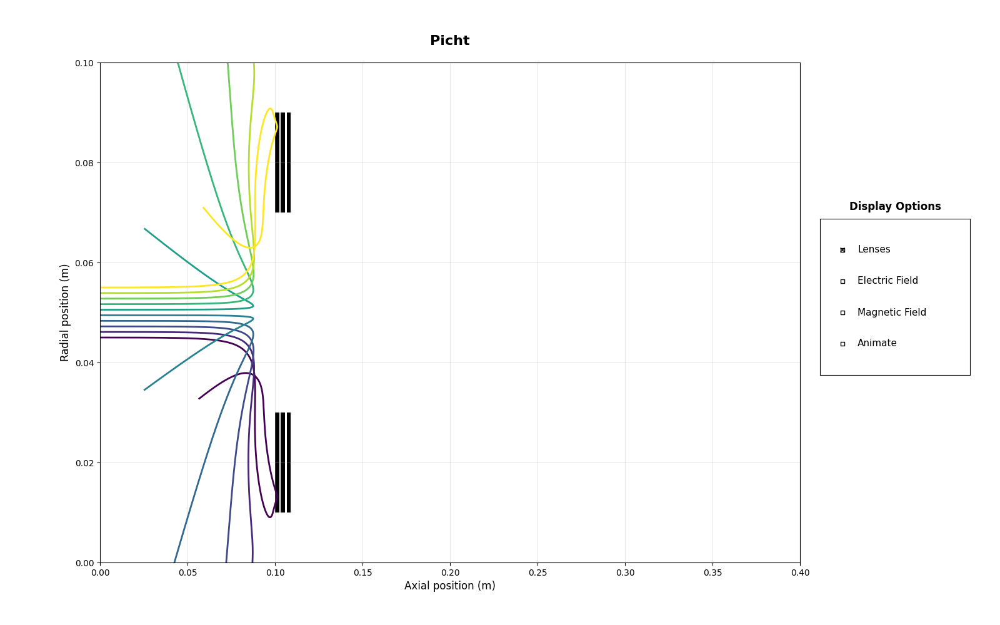

Note
Go to the end to download the full example code.
Unipotential Lenses: Deflection
Some problems that may occur when you set your focus voltage drastically above your energy in eV can be demonstrated by this example. Here the beam energy is only 1000 eV but we set the einzel lens to a -50kV focus voltage. Here, we see beam reflection, due to the extremely strong fields coming from the unipotential lens. Whenever chaining several einzel lenses, this problem becomes especially pertinent, so carefully tuning electron energies and einzel lens focus voltages are important. Minimize the difference between aperture_width and outer_diameter as well, for cleaner field configurations.
 9 import numpy as np
10 from picht import IonOpticsSystem, ElectrodeConfig
11 import matplotlib.pyplot as plt
12
13 system = IonOpticsSystem(nr=100, nz=400, axial_size=0.4, radial_size = 0.1)
14
15
16 system.add_einzel_lens(
17 position=100.0,
18 width=10.0,
19 aperture_center=50.0,
20 aperture_width=40.0,
21 outer_diameter=80.0,
22 focus_voltage=-50000
23 )
24
25 potential = system.solve_fields()
26
27 trajectories = system.simulate_beam(
28 energy_eV= 1000,
29 start_z=0,
30 r_range=(0.045, 0.055),
31 angle_range=(0, 0),
32 num_particles=10,
33 simulation_time=1e-8
34 )
35
36 figure = system.visualize_system(
37 trajectories=trajectories,
38 display_options=[True, False, False, False])
39
40 plt.show()
Total running time of the script: (0 minutes 1.066 seconds)